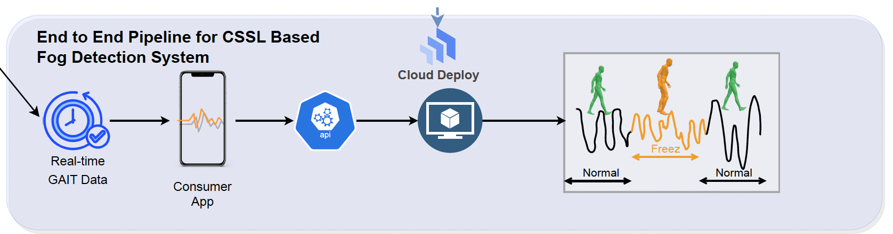
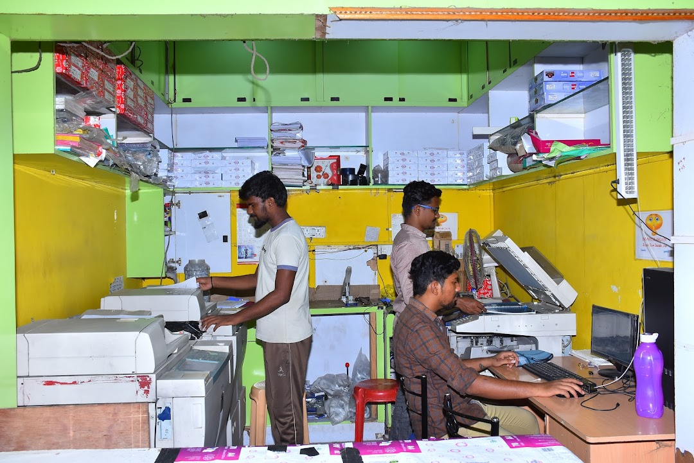

Freezing of GAIT - Parkinson Patients (Deep Learning, Wearable Sensors, GAIT)
I am working on a project that involves creating an adaptive system for Parkinson's Disease (PD) management using wearable tech and machine learning. The goals are to monitor PD symptoms in real-time, predict medication effectiveness,
and dynamically adjust treatment plans based on up-to-the-minute data.

(AUG 2023 -
Present)
Impact of Social Media on Family Bondings (HCI, Sociology, Human Psychology)
We are examining if the use of social media in Bangladesh contributes to a breakdown in communication between family members. Data has been collected using semi-structured face-to-face interviews. The Thematic technique will be
used to collect and evaluate data from the recorded audio scripts of our interviewees in order to identify a pattern.
(OCT 2022 -
AUG 2023)
South Asian Public Digital Service Centers and the Risk to User Privacy (HCI, Privacy)
This study looked at 19 digital service centers in Bangladesh. The findings showed that customers of these centers were vulnerable to privacy breaches due to a lack of infrastructure, local power politics, a lack of knowledge, and inadequate protection
mechanisms.

(2019)
Android Malware Detection Based on System Calls Using NLP and Machine Learning Algorithms (ML, Security and Privacy)
I wanted to extend one of Dr. Hossain’s previous research where he used 1-step transition probability between the system calls to detect malware apk. As the prior model cannot capture the order or structure of system calls, it
lacks semantic information. So after conducting a literature review to identify the limitations of the existing method for evading System Call-based Intrusion Detection System (IDS), I proposed a Machine Learning based robust
dynamic method to detect malware apks, that can automatically execute the code routines as well as generate the user behavior of the android app.
fig:work process and parsed system calls

Main Objectives & Findings:
- Generate user behavior during the system call retrieval from a virtual android device
- Use a universal sentence encoder to represent each system call with an equivalent vector of 512 dimensions.
- Finally, a random forest classifier with 100 estimators is used to ‘accurately’ classify our data. Along with the Random Forest (RF) model, we ran experiments with other models, such as Logistic Regression, Multilayer Perceptron
(MLP) and XGBoost to compare our results.
External collaborators
A S M Ahsan-Ul
Haque
Software Development Engineer, Amazon.com
M.Sc, University of Virginia [2022], B.Sc in CSE, BUET [2017]
(April 2022 -
Present)
Data Warehouse Design for Health Sectors and Outbreak Prediction (Deep Learning, Data mining and Information Systems)
I have developed a clinical big data platform prototype-NCDW, integrating ambient data from 34 weather stations of Bangladesh Meteorological Department (BMD) as a proof of concept and solved the fundamental obstacle for data-driven
communicable and non-communicable disease research, including record-linkage, privacy, and security, standardization, and interoperability. I submitted the conceptual design of my proposed system to
Bangladesh Space Research and Remote Sensing
Organization (SPARRSO) and secured their “Research Fellowship”. This platform enhance descriptive, diagnostic,predictive, and prescriptive analysis and research for a wide variety
of diseases.
Main Objectives:
- Estimate the size of the NCDW and facilitates regional and national decision support, intelligent disease analysis, knowledge discovery, and data-driven research
- Develop a model to predict the number of cases of a given month of a given district.
- Forecast a disease outbreak
You can read my thesis
here !!!
fig:Architecture, Data Cube
and Possible Outbreak
(2021 - 2022)
Security Analysis of Popular Bangladeshi Android Apps (Security and Privacy)
I worked briefly on a govt-funded research project and we published two articles in
BGD e-GOV CIRT, analyzing the security implementation of Bangladesh's most popular Android applications from different domains.
You can read my published articles from publication
section!!!
Main Objectives & Findings:
- I compared three different versions of each app to check whether the subsequent versions of the app have improved with respect to security score using some security tools & framworks (MobSF, Androbugs, Quark, JD-GUI,
ApkTool)
-
To analyze these apps statically in batches, I implemented different bash scripts to automate the process
-
I found that some popular banking apps log sensitive information without encryption, execute raw SQL queries which can cause SQL injection attacks and use HTTP for communication, although their servers support HTTPS. Later, we informed these banks about
their existing vulnerabilities so that they can minimize their financial loss and rectify themselves in future updates to protect clients' privacy
Reports of our results:
-
Shovito Barua Soumma, and Md Shohrab Hossain,
"Comparative Analysis on Different Periodic Versions of Bangladeshi
App", BGD e-GOV CIRT Magazine October 2021
[Read]
-
Ajoy Das,
Shovito Barua Soumma, and Md Shohrab Hossain,
"Security Analysis of Popular Financial Android Apps of
Bangladesh", BGD e-GOV CIRT Magazine September 2021
[Read]
External collaborators
Ajoy Das,
Graduate Research and Teaching Assistant, University of Calgary
B.Sc in CSE, BUET [2019]
Kanak Das,
Graduate Research and Teaching Assistant, University of California, Riverside
B.Sc in CSE, BUET [2019]
(March 2021 - October
2021)
Feature Selection Algorithms for Effective Botnet Detections (ML, Secuirty)
I’m attempting to construct a feature selection algorithm using a diversified (containing 16 different types of botnets) dataset. I designed several heuristics to select the best features from a handful of possible features. Some
proposed heuristics are truly feature-based, and some are group-based, thus generating different accuracy levels. Initially, we select 15 potential features for botnet detection. However, all features may not be (equally) useful
for building a machine learning model and an increased number of features also increases the complexity of the model and might reduce the overall accuracy. Our selected feature set performs reasonably well in the machine learning
model for identifying the botnets. With the strong guidance of Dr. Rahman, our team proposed four novel heuristics for feature selection, derived their time complexity, and perform a comparative analysis of these methods’ performance
reviewing other state-of-the-art methods.
(2020 - 2021)
Finding Efficient Feature Extraction and Classification Architecture for Brain Tumor Detection from MRI Image (Deep Learning, Image
Processing, CNN)
Brain MRIs are notoriously imprecise in revealing the presence or absence of tumors. Using MRI scans of the brain, a Convolutional Neural Network (CNN) was trained to identify the presence of a tumor in this research. In order
to evaluate the CNN model's capability for processing images, we applied the extracted features from DL different models into following ML models: KNN, Logistic regression, SVM, Random Forest, Naive Bayes, and Perception.
We have implemented four different models which are Densenet, Resnet50, EfficientnetB0, and our own custom CNN model. For optimization of our deep learning model, we used Adam algorithm. First, the performance is evaluated
using several performance metrics. During the training of a model, we concentrated on reducing loss while simultaneously boosting accuracy
fig:work process and accuracy
(2022)